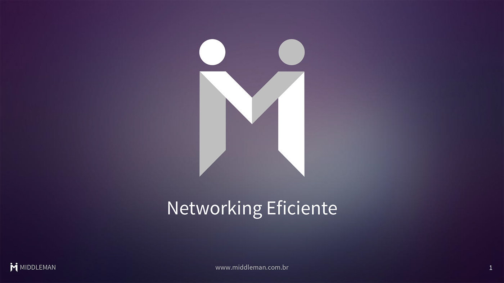
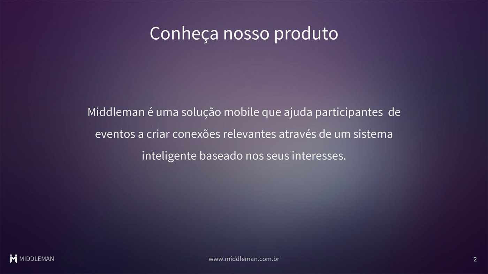
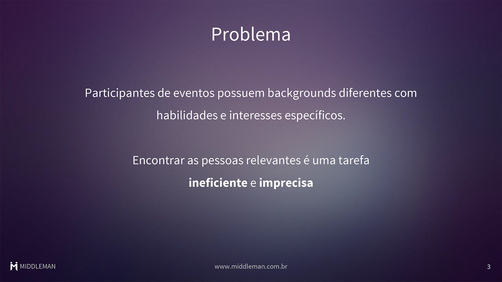
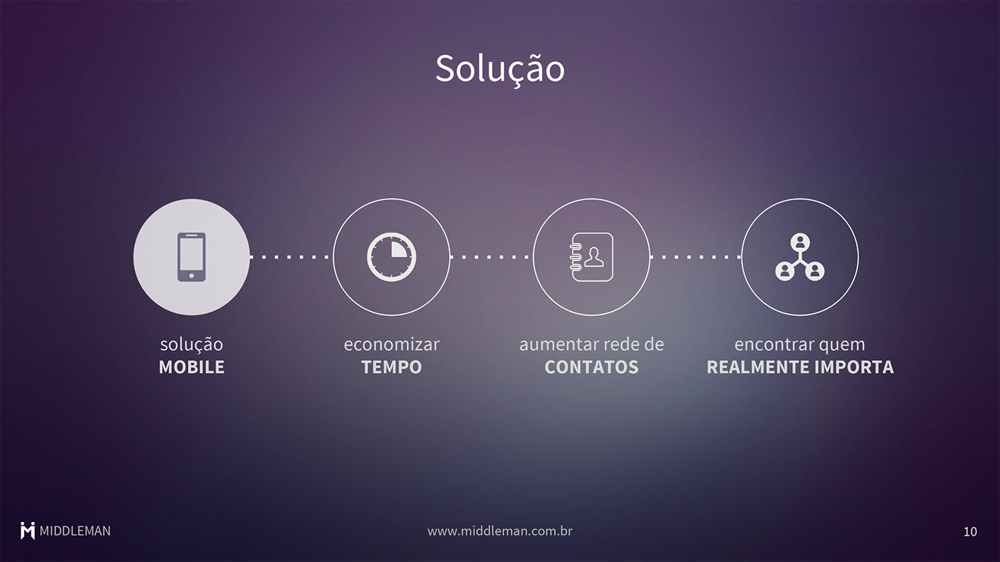
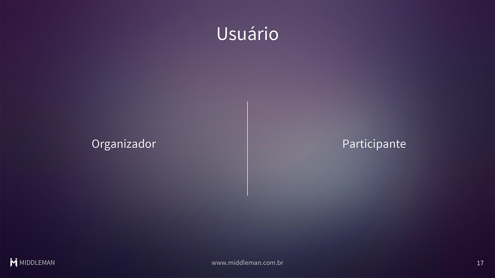
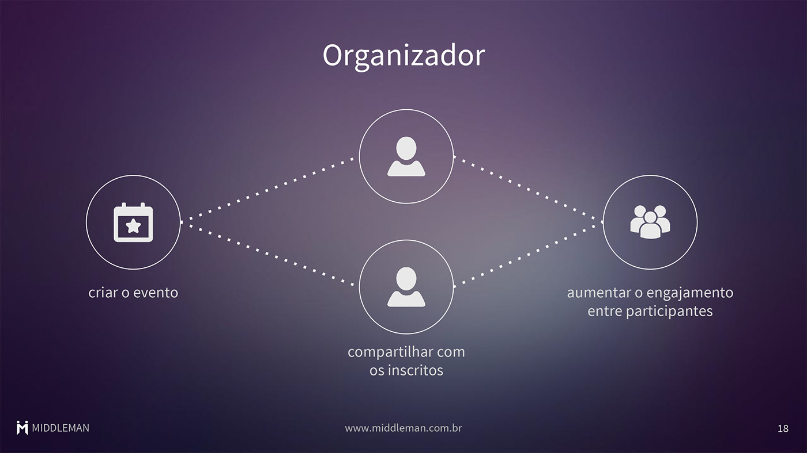
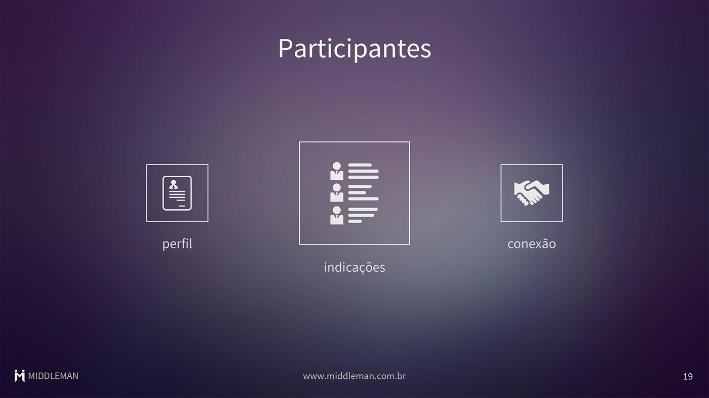
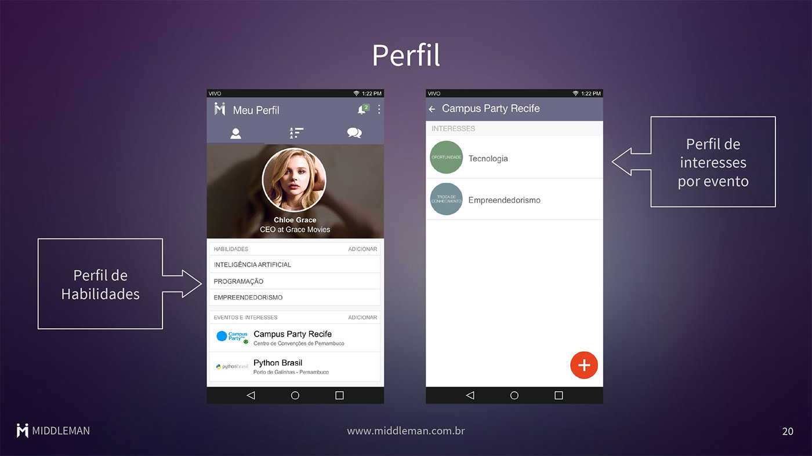
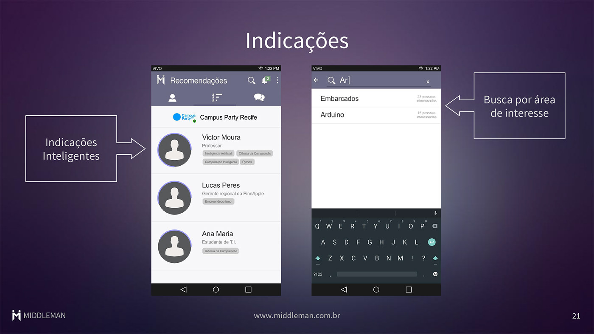
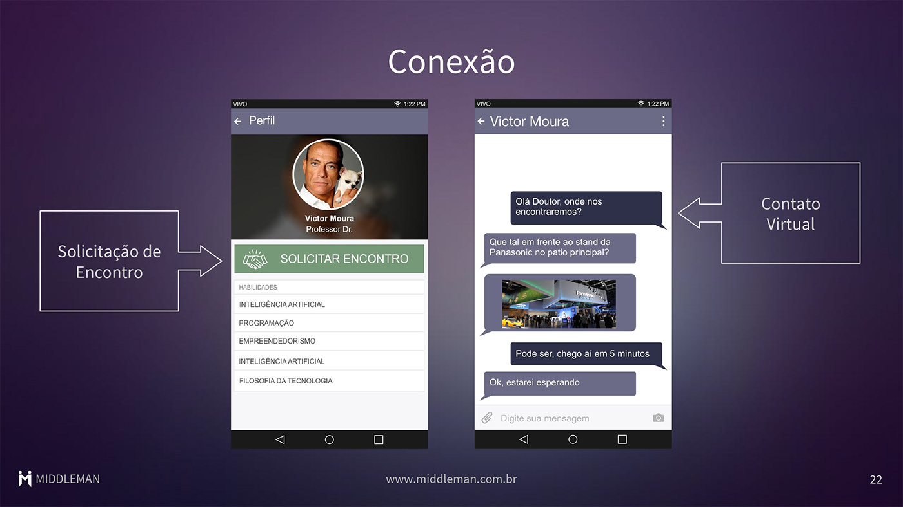

Middleman é uma solução mobile que torna a experiência de networking mais eficiente durante o momento do evento em que o participante se encontra, estimulando o encontro físico e facilitando a troca de contatos.









